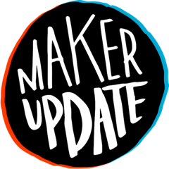

Maker Update Archive
Search 9 years of projects and tips from the Maker Update show.
All
Projects
Tips
Sort: Default
Sort: Newest first
Sort: Oldest first
Reset
Filtering by tag:
× clear
Show more results